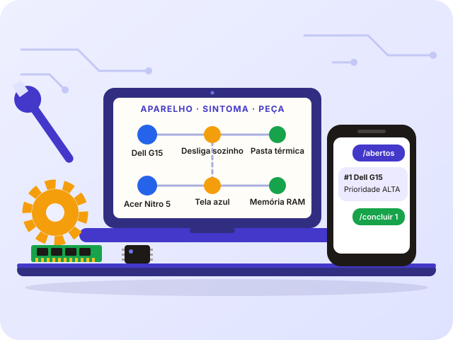

Tutorial passo a passo
Construa o projeto com o Gemini
Você cria uma pasta, abre no Antigravity e pede ao Gemini, passo a passo, o site, a API, a triagem, a automação e o agente. Só no final leva a pasta para o GitHub.
- 10passos
- 2h+com calma
- 1pasta, do começo ao fim

Antes de começar, faça as Etapas 1 a 4 do manual. Depois, faça um passo de cada vez, na ordem. Quando terminar, marque a caixinha "Passo feito" no fim dele. Os passos 8 e 9 são opcionais.
Como este tutorial funciona
Você pede, o Gemini cria
Cada passo tem um pedido pronto com botão de copiar. Cole no painel do assistente.
Você lê e aprova
O assistente pode mudar arquivos e rodar comandos. Leia antes de aceitar.
Você confere
Todo passo diz "Deu certo se" e pede um comprovante simples.
Os passos
1Conferir e instalar o Python (e o Git)
O projeto é escrito em Python. O Gemini só consegue rodar o código se o Python estiver instalado. Primeiro confira. Se faltar, instale.
A) Conferir o que você já tem
Abra o terminal: tecla Windows, digite PowerShell, Enter. Digite os três comandos, um de cada vez:
python --version pip --version git --version
| O que apareceu | O que significa |
|---|---|
Python 3.12.10 (ou outro 3.x) | O Python está instalado. |
Uma versão do pip | O pip está instalado. Ele instala as peças do projeto. |
Uma versão do git | O Git está instalado. Você só vai usar no final. |
| "não é reconhecido" | Falta instalar, ou o PATH não foi marcado. |
| Abriu a Microsoft Store | O Python não está instalado. Instale pelo passo B. |
Pedido: conferir as ferramentas
Verifique, no meu computador, se o Python e o pip estão instalados e funcionando, e se o Git está instalado. Mostre a versão de cada um. Se algum faltar, explique em passos curtos, para Windows, como instalar. Peça minha permissão antes de rodar cada comando.
B) Instalar o Python (se faltar)
- Abra python.org/downloads.
- Clique no botão amarelo Download Python. Prefira a versão 3.12 (ou 3.11). Versões muito antigas deixam de receber correções. Por isso não use uma anterior à 3.11.
- Abra o arquivo baixado.
- Marque a caixinha "Add python.exe to PATH" (embaixo, na primeira tela).
- Clique em Install Now e espere terminar.
winget install Python.Python.3.12
C) Fechar e abrir de novo
Abra um terminal novo e repita python --version.
D) Instalar o Git (se faltar)
O Git guarda as versões da sua pasta e só será usado no final. Você pode instalar agora ou na Etapa 6 do manual.
- Abra git-scm.com/download/win e baixe o instalador.
- Abra o arquivo e clique em Next até o fim. As opções padrão servem.
- Feche e abra o terminal. Confira com
git --version.
E) Teste o Python de verdade
Ver a versão não basta. Rode um programinha seu. No PowerShell, digite:
python -c "print('Olá, oficina!')"
Deve aparecer Olá, oficina!. Agora instale uma peça de teste e use:
python -m pip install requests python -c "import requests; print(requests.__version__)"
Apareceu um número de versão? O pip funciona. Você vai usar isso na API.
F) Os arquivos que você vai ver no projeto
| Arquivo ou pasta | Para que serve | Vai para o GitHub? |
|---|---|---|
requirements.txt | Lista das peças que o projeto usa. | Sim |
.venv | Ambiente virtual: uma caixa só do projeto, com as peças dentro. Pode ser refeita a qualquer hora. | Não |
.env | Suas chaves e senhas. | Nunca |
.db | O banco de dados com os chamados. | Não |
G) Ativar o ambiente virtual
O Gemini vai criar o ambiente virtual no Passo 5. Para ligar o ambiente, o PowerShell usa este comando, dentro da pasta do projeto:
.venv\Scripts\Activate.ps1
Deu certo se o começo da linha do terminal mostrar (.venv). Para desligar, digite deactivate.
Set-ExecutionPolicy -Scope CurrentUser -ExecutionPolicy RemoteSignedSe disser que não tem permissão, chame o professor. Não tente contornar.
H) Se algo der errado
| O que aconteceu | O que fazer |
|---|---|
python abre a Microsoft Store | É um atalho falso. Instale o Python pelo passo B. Depois, em Configurações, procure Aliases de execução de aplicativo e desligue os dois "python". |
python não é reconhecido, mas o Python está instalado | Tente py --version. Se funcionar, use py no lugar de python. |
pip não é reconhecido | Use python -m pip no lugar de pip. |
| Aparece uma versão antiga do Python | Há duas instalações. Veja qual o terminal acha primeiro: Get-Command python -All. Chame o professor antes de apagar algo. |
O download ou o pip install falha | Confira a internet. Em rede da escola, pode haver bloqueio. Avise o professor. |
| O instalador pede senha de administrador | Veja "Se travar" no Roteiro. |
Cola de comandos do dia a dia
| Para quê | Comando |
|---|---|
| Ver a versão do Python | python --version |
| Rodar um arquivo | python nome.py |
| Ligar o ambiente virtual | .venv\Scripts\Activate.ps1 |
| Desligar o ambiente | deactivate |
| Instalar as peças do projeto | python -m pip install -r requirements.txt |
| Ver o que está instalado | python -m pip list |
| Parar um programa que está rodando | Ctrl + C |
python --version mostrar uma versão 3.x, pip --version mostrar uma versão e o teste da parte E imprimir Olá, oficina!.Olá, oficina!.2Conferir a pasta e o assistente
Você já fez a Etapa 1 do manual: criou a pasta oficina-digital e abriu no Antigravity. Confira antes de continuar.
- O Antigravity está aberto com a pasta
oficina-digital. - O painel do assistente aparece do lado direito do editor.
- O Gemini respondeu ao seu primeiro olá.
3Pedir o plano ao Gemini
Antes de criar qualquer coisa, peça um plano. Assim você entende o caminho e não se perde.
Pedido do plano
Sou aluno iniciante e leio pouco. Fale em frases curtas e palavras simples. Vamos criar, nesta pasta, um projeto chamado Oficina Digital: uma oficina de conserto de computadores de mentirinha. O cliente abre um chamado num site. Uma API em Python guarda o pedido. Uma triagem faz o laudo. O técnico recebe aviso no Telegram. O cliente acompanha o chamado no site. As partes são: site (HTML, CSS e JavaScript), API (Python com FastAPI e banco SQLite), triagem com grafo de conhecimento, automação em Python, agente CrewAI com Gemini (no Google Colab) e bot do Telegram. As chaves e senhas ficarão num arquivo .env, que não vai para o GitHub. NÃO crie nenhum arquivo agora. Mostre só o plano, em passos curtos e na ordem certa, e a estrutura de pastas. Depois pergunte se pode começar.
- Leia o plano com calma. Se não entender algo, pergunte: "Explique a parte X de novo, mais simples."
- Quando estiver claro, responda: "Pode começar pelo site."
site e api.4Criar o site
O site é a vitrine: o cliente preenche o chamado e acompanha o andamento.
Pedido do site
Agora crie só o SITE, numa pasta chamada "site".
Uma página (index.html) com letra grande e fácil de ler.
- Formulário "Abrir chamado" com quatro campos: nome, contato (e-mail ou telefone), equipamento e relato do problema. Botão "Enviar chamado". Ao enviar, mostre o número do chamado.
- Área "Acompanhar": a pessoa digita o número e vê o status, a prioridade e o laudo.
- O site conversa com a API em http://localhost:8000 (POST /chamados e GET /chamados/{numero}). Se a API estiver desligada, mostre um aviso claro.
Explique cada arquivo em palavras simples. Ainda não crie a API.
- Cole o pedido no painel do assistente e aperte Enter.
- Leia o que ele vai criar. Aceite se entender.
- Na pasta
site, dê dois cliques emindex.htmlpara ver no navegador.
5Criar a API e ligar
A API é o programa que recebe os chamados e guarda no banco de dados. Ela precisa ficar ligada para o site funcionar.
Pedido da API
Agora crie só a API, numa pasta chamada "api", com Python e FastAPI.
- Banco de dados SQLite, num arquivo.
- POST /chamados: recebe nome (mínimo 2 letras), contato (mínimo 5), equipamento (mínimo 2) e relato (mínimo 10, máximo 1000). Responde com o número e o status "aberto".
- GET /chamados/{numero}: devolve equipamento, status, prioridade, laudo e data. NÃO devolva nome nem contato.
- Status possíveis: aberto, em_andamento, concluido.
- Libere CORS para uso local.
Crie o arquivo requirements.txt. Depois me diga, passo a passo, como criar o ambiente virtual, instalar as peças e ligar a API, e o que devo ver no terminal. Peça minha permissão antes de rodar qualquer comando.
- Cole o pedido. O assistente cria a pasta
apie os arquivos. - Ele vai pedir permissão para rodar comandos (criar o ambiente, instalar as peças, ligar a API). Leia cada um e aceite se entender.
- A API fica rodando no terminal. Não feche esse terminal. Para parar:
Ctrl + C.
Uvicorn running on http://127.0.0.1:8000.http://localhost:8000/docs.Uvicorn running.6Criar a triagem e ver o site funcionando
A triagem faz o laudo. Ela usa o grafo: a memória da oficina, que liga aparelho → sintoma → causa → peça.
Pedido da triagem com o grafo
Agora crie a triagem com um grafo de conhecimento, em Python simples, que funcione SEM internet e SEM chave. O grafo liga aparelho, sintoma, causa e peça. Use exatamente estes sete casos: 1. Dell G15 | desliga sozinho | pasta térmica de fábrica ressecada e aletas obstruídas | Pasta Térmica Alta Condutividade, Thermal Pads 2. Dell G15 | não liga | curto no circuito de carga (MOSFET de entrada) | MOSFET Canal N 30V, Carregador 130W 3. Acer Nitro 5 | tela azul | oxidação nos contatos da memória RAM | Limpa Contato Isopropílico, Memória DDR4 4. Acer Nitro 5 | tela preta | cabo flat da tela rompido ou solto na dobradiça | Cabo Flat EDP Nitro 5 5. MacBook Air | bateria não carrega | ciclos da bateria esgotados ou conector oxidado | Bateria Original A1466 6. Desktop | reinicia em jogos | fonte genérica sem potência suficiente | Fonte ATX 600W 80 Plus 7. Notebook | lentidão extrema | HD mecânico antigo com setores ruins | SSD NVMe 500GB ou SATA Depois que um chamado é criado, faça o laudo em segundo plano: procure o aparelho e as palavras do relato no grafo. - Se achar um caso: prioridade "alta" quando o relato tiver "não liga" ou "desliga", senão "media". Use a causa e as peças do caso. - Se não achar: prioridade "media" e causa "necessário teste detalhado na bancada". Guarde a prioridade e o laudo no chamado. Crie também testes automáticos com pytest e me diga como rodar.
Teste no site
- Com a API ligada, abra o
index.htmldo site. - Preencha um chamado: equipamento Dell G15, relato "Esquenta muito e desliga sozinho quando eu jogo".
- Clique em Enviar chamado e anote o número.
- Em Acompanhar, digite o número e consulte.
7Criar a automação em Python
A automação é um segundo robô, de reserva. Ele procura chamados que ficaram sem laudo e completa.
Pedido da automação
Crie a automação em Python, um programa separado, de reserva. A cada 5 segundos ela procura chamados SEM laudo e preenche o laudo usando a mesma triagem com grafo. Se não houver nenhum, escreve "Nenhum chamado pendente no momento". Deve parar com Ctrl + C. Explique como ligar, em um terminal separado.
- Cole o pedido e aceite o que fizer sentido.
- Ligue a automação num segundo terminal, como o assistente explicar. Deixe a API ligada no primeiro.
Nenhum chamado pendente no momento a cada 5 segundos. Isso é normal: como a API já faz o laudo na hora, quase nunca sobra chamado sem laudo.Ctrl + C.8Criar o agente CrewAI no Google Colab (a dupla de especialistas)
O CrewAI junta dois agentes de IA: um atendente e um técnico. Este passo é opcional. Ele roda no Google Colab, um caderno de código na nuvem do Google. Você não instala nada no seu computador.
A) Abrir o Colab
- Abra colab.research.google.com e entre com a sua conta Google.
- Crie um novo notebook e dê o nome
agente-crewai.
B) Pegar a chave do Gemini
A chave do Gemini é uma senha que deixa o seu programa usar o Gemini. Ela se chama chave de API.
Onde encontrar:
- Abra aistudio.google.com com a mesma conta Google.
- No menu da esquerda, procure Chaves de API (API keys). Se não achar, procure um botão Get API key.
- Clique em Criar chave de API (Create API key). Se pedir um projeto, escolha o que aparecer.
- A chave é um texto longo. Copie e guarde num papel. Não cole no chat do assistente.
Pedido: onde acho a chave do Gemini
Preciso de uma chave de API do Gemini para usar no Google Colab. Explique, em passos curtos, onde eu encontro essa chave no Google AI Studio e como guardar nos Segredos do Colab. NÃO peça que eu cole a chave aqui no chat.
C) Guardar a chave nos Segredos do Colab
- Na barra da esquerda do Colab, clique no ícone de chave (Secrets, ou Segredos).
- Clique em Adicionar novo segredo.
- No nome, escreva
GEMINI_API_KEY. No valor, cole a chave. - Ative a opção de acesso do notebook a esse segredo.
D) Pedir o código ao Gemini
Pedido do agente CrewAI (para o Colab)
Crie o agente CrewAI para rodar no GOOGLE COLAB, e não no meu computador.
Dois agentes que trabalham juntos:
- "atendente de triagem": entende o relato do cliente e diz a urgência (alta, média ou baixa).
- "técnico": sugere a causa provável e os próximos passos.
Use o Gemini como modelo. A chave deve vir dos Segredos do Colab, assim:
from google.colab import userdata
userdata.get("GEMINI_API_KEY")
NUNCA escreva a chave no código.
Escreva o código em células curtas e numeradas:
1) instalar o CrewAI com !pip install
2) ler a chave dos Segredos
3) criar os dois agentes e as tarefas
4) rodar com este relato de exemplo e mostrar o laudo: "Dell G15 esquenta muito e desliga sozinho quando eu jogo"
Explique cada célula em uma frase. Diga quanto tempo a instalação pode levar e o que fazer se o Colab pedir para reiniciar a sessão.
- Cole o pedido no painel do assistente do Antigravity. Se o Colab mostrar o ícone do Gemini no rodapé do notebook, você também pode pedir lá.
- Copie uma célula de cada vez para o Colab (botão + Código).
E) Rodar no Colab
- Clique no botão de play de cada célula, na ordem.
- A instalação pode levar alguns minutos. Espere terminar.
- Se o Colab pedir para reiniciar a sessão, aceite e rode de novo a partir da célula 2.
F) Guardar o notebook na sua pasta
No Colab: Arquivo → Fazer download → .ipynb. Coloque o arquivo na pasta oficina-digital. Assim ele vai junto para o GitHub no final.
9Criar o Rádio do Técnico (Telegram)
O bot manda os chamados para o seu celular e aceita comandos. Esta parte também é opcional. Aqui você usa duas informações secretas: o token do bot e o seu Id.
A) Criar o bot e achar o token
- No Telegram, procure @BotFather (com selo azul de verificado). Envie
/start. - Envie
/newbot. - Digite o nome da oficina. Depois um usuário que termine em
bot. - No fim, o BotFather manda uma mensagem com o token: um texto longo com números, dois pontos e letras. Esse é o token.
- Abra a conversa com o seu bot e envie
/start.
/mybots, escolha o seu bot e procure API Token. Para gerar um novo, envie /token.B) Achar o seu Id
O Id é um número que identifica a sua conversa. O bot só obedece a quem tem esse número.
- No Telegram, procure @userinfobot e envie
/start. - Ele responde com o seu Id (só números). Anote.
Pedido: mostrar o meu Id
Crie um programa pequeno em Python que mostra, na tela, o número do chat de quem mandar uma mensagem ao meu bot do Telegram. Leia o token do arquivo .env e NUNCA o escreva no código. Explique como rodar.
/token no BotFather.C) Pedir o código ao Gemini
Pedido do Telegram
Crie o aviso e os comandos do Telegram, sem biblioteca extra (use a API oficial por HTTP). Quando chegar um chamado, avise o técnico com o laudo. Aceite só comandos do chat do técnico: /abertos (lista a fila), /ver N (mostra o laudo), /andamento N e /concluir N. O token do bot e o número do chat devem vir de um arquivo .env (use python-dotenv), NUNCA escritos no código. Crie também um arquivo .env.example com os NOMES das variáveis e sem valores, e coloque .env no .gitignore. No fim, me diga os nomes das variáveis que você escolheu e em qual pasta o arquivo .env deve ficar. Se as variáveis faltarem, só escreva o aviso na tela e continue funcionando. Explique como testar no meu computador, sem endereço público (buscando as mensagens do bot).
D) Guardar o token e o Id no arquivo .env
As informações secretas ficam num arquivo chamado .env, na pasta indicada pelo assistente. Você mesmo escreve os valores, no editor do Antigravity. Nunca no chat.
- Na pasta do Antigravity, abra o arquivo
.env.exampleque o assistente criou. Ele mostra os nomes, sem valores. - Crie um arquivo novo chamado
.envna mesma pasta (se não souber, peça: "Crie um arquivo .env vazio na pasta certa"). - Escreva uma linha para cada nome, com o valor logo depois do sinal de igual, sem espaços e sem aspas. Exemplo com valores falsos:
TELEGRAM_TOKEN=123456789:valor-do-seu-token TELEGRAM_CHAT_ID=123456789
- Troque os valores falsos pelos seus. Salve com
Ctrl + S. - Abra o arquivo
.gitignoree confira que existe uma linha escrita.env. Assim o arquivo não vai para o GitHub.
.env.example. O exemplo acima é só um modelo.Veja mais no Guia das chaves.
E) Testar no celular
| Você envia | Resultado |
|---|---|
/abertos | Lista os serviços na fila |
/ver 1 | Mostra o laudo do chamado 1 |
/andamento 1 | Marca como em andamento |
/concluir 1 | Dá baixa: serviço entregue |
.env? Você reiniciou o programa depois de salvar o .env? Você enviou /start ao seu bot? Peça ajuda ao Gemini sem colar o token./abertos e a resposta do bot (tape o token!).10Ver tudo funcionando
Hora do teste de ponta a ponta. Confira cada item:
- A API está ligada (terminal mostra
Uvicorn running). - No site, você abre um chamado e recebe o número.
- O laudo aparece em Acompanhar, com prioridade e causa.
- Os testes passam (peça ao assistente: "Rode os testes e me diga o resultado.").
- Se fez o Telegram: o aviso chega no celular e os comandos funcionam.
Socorro rápido
| Problema | O que fazer |
|---|---|
| O site diz que a API está desligada | O terminal da API fechou. Peça ao assistente: "Como eu ligo a API de novo?" |
| Apareceu um erro no terminal | Copie o erro (sem chaves) e peça ao assistente para explicar e corrigir. |
| Fechei o terminal | As variáveis que você digitou somem. Digite de novo. |
| A cota do assistente acabou | Espere renovar (toda semana) ou use o Gemini no navegador. |
| Não sei qual terminal é qual | Peça ao assistente para listar os terminais abertos e o que cada um faz. |
Regras de segurança
- Senha, token e chave são seus. Não mande em conversa, foto, print ou no chat do assistente. Veja o Guia das chaves.
- Antes de qualquer print, tape o token.
- Leia antes de aceitar mudanças e comandos do assistente.
- Dados de cliente (nome, telefone) não vão para o GitHub.